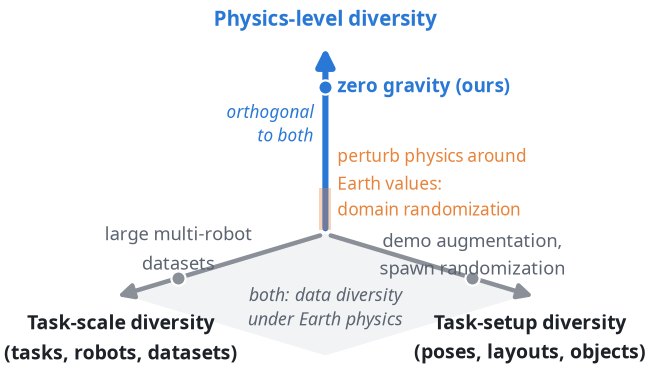
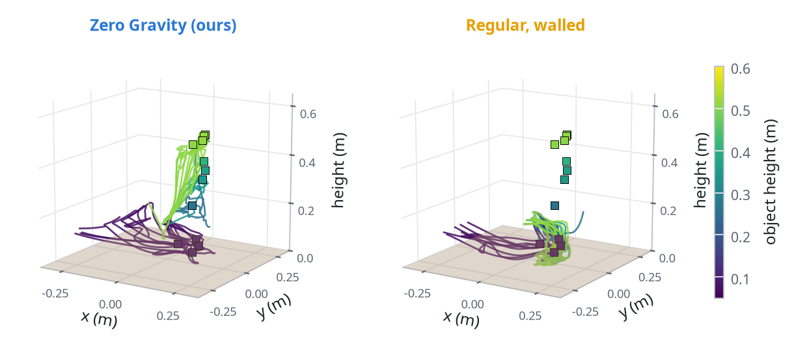
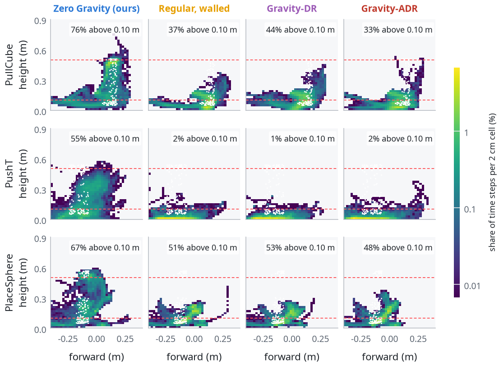
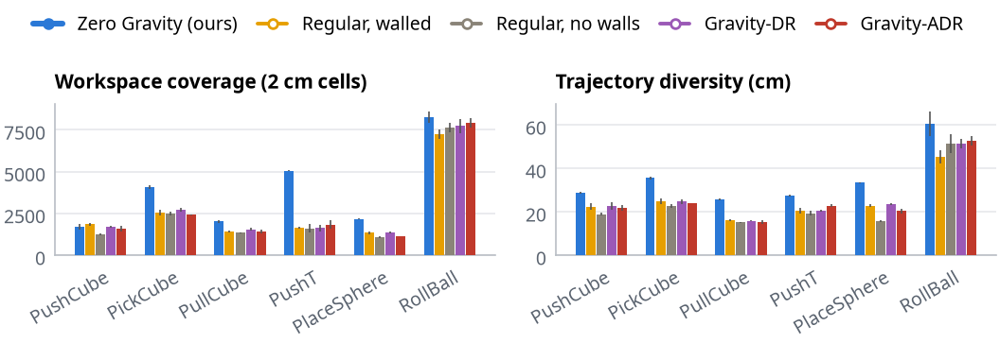
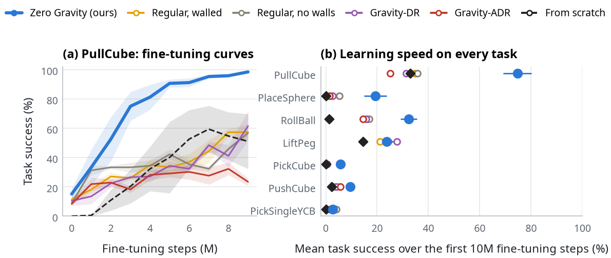

Abstract
Simulated tabletop manipulation shows a robot a near-two-dimensional slice of the world: objects rest on the table, so the policy only learns to reach, push and grasp close to the table plane. Getting spatial variety under Earth gravity requires hand-designed 3D task setups such as shelves and supports. We propose an alternative that edits the simulator's physics instead: beyond domain randomization, which treats physics variation as noise for robustness, we use altered gravity as a source of spatial signal. Reinforcement-learning experts are trained with gravity switched off for the object until the robot touches or grasps it, after which gravity returns and the task is finished as usual. Selective containment volumes, thin walls that block the floating object but not the arm, keep the object from flying away and make learning in zero gravity possible, and switching gravity on at contact or grasp prevents the reward hacking we observe in pure zero gravity. Compared with experts trained under regular or randomized gravity at the same cost, the zero-gravity experts produce the most varied gripper paths on all six tasks we test. To evaluate spatial generalization we design spatially harder variants of the tabletop tasks, in which the object rests on a support at a random height: there the zero-gravity experts reach the object in 79% of episodes at heights inside their training range against 30–33% for the baselines, and in 54% above every arm's training range, where the baselines rarely do (at most 3%). Fine-tuned on these variants, they also adapt faster.

Method


Selective containment volumes. A floating object that is nudged keeps drifting out of reach. We enclose the spawn volume in 1 mm walls that collide with the object but not with the robot, and that have no visual shape, so cameras never see them (drawn here as glass for illustration). This is what makes learning in zero gravity possible.
Gravity switching. In pure zero gravity, policies learn to shove the floating object toward the goal and let it drift. Switching gravity on at contact or grasp, and gating object-pose reward terms behind the same switch, removes these exploits; the rest of every episode is the ordinary task.
Spatially harder evaluation. We design a harder variant of every tabletop task: the object rests on a support at a height drawn uniformly over the arm's reach. We report a staged metric (reach → touch → grasp or move → success) to see where each policy fails. Baselines: regular gravity (with the same walls, and without) and fixed and adaptive gravity randomization, with the same tasks, PPO recipe, budget and three seeds.
Results
Same layout, two policies
Zero-gravity experts explore the 3D workspace



They reach and handle raised objects, zero-shot

They adapt faster to spatially harder tasks

Next steps
Our experts are state-based; distilling their demonstrations into vision-language-action models and real-robot tests are ongoing. Zero gravity is a separate axis from task setup and task scale, so zero-gravity versions of multi-task suites could add spatial variety on top of the diversity those suites provide. Manipulation in space is a natural direction: in orbit, objects float for the whole task, and a fixed-base arm handling floating objects is very close to what this training setup already allows.
BibTeX
@article{zerogravity2026,
title = {Learning in Zero Gravity: Altered Physics as a Source of
Spatially Diverse Robot Experience},
author = {Anonymous},
year = {2026},
note = {In preparation}
}